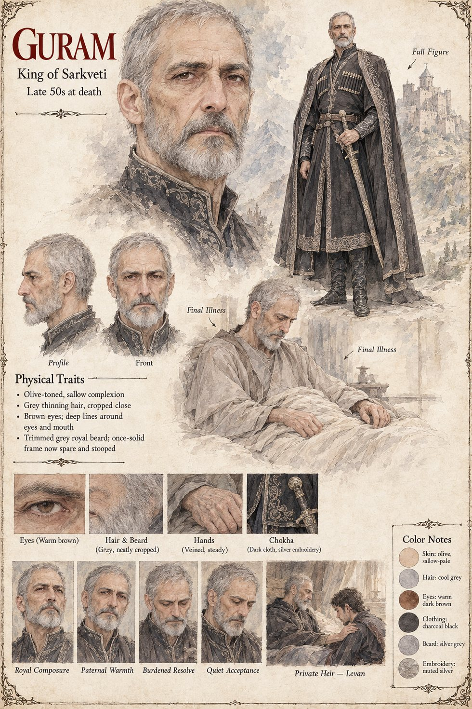

Guram
King of Sarkveti · Levan's father, Bagrat's uncle · late 50s at his death
King of Sarkveti, father of Levan and uncle to Bagrat, who has buried a wife, a brother and most of his patience for miracles that come with strings attached. He takes the surgeons' verdict standing and dry-eyed, as the histories like to say every Sarkveti king took bad news, then walks the northern wall with Vazha and puts both hands over his face. When the clockmaker offers a working hand in exchange for the freedom to leave, he asks only whether it is sorcery, heresy or something a Hierarch must bless first, and accepts the answer that it is craft.
In his last illness he tells Levan that he was never meant to need it, and that a boy who never needed to be extraordinary might have made a very dull king. He dies eight days later. That same night he has chosen between the two young men he raised, and has asked Vazha to see the choice honored quietly rather than announced, so that the kingdom might come to it freely. The sheet gives his age as the late fifties at death, with cropped grey hair, a trimmed grey beard, warm brown eyes and a dark chokha embroidered in muted silver.
“You were never meant to need it, and I find I am glad of that more than I am sorry for the rest of it.”